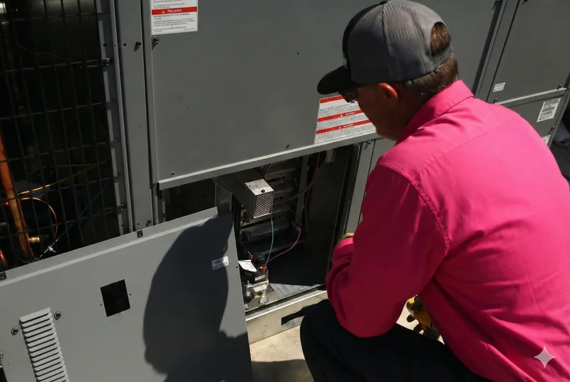

That first blast of humid, 90-degree air in May is a Tampa rite of passage. It’s the moment you know your air conditioner is about to become the most valuable player in your home for the next six months. But is it ready for the challenge? Here in the Tampa Bay area, where the heat and humidity are relentless, an AC unit isn’t a luxury—it’s a necessity. Ignoring it until it breaks down on a sweltering August afternoon is a recipe for discomfort and expensive emergency repairs.
Proactive maintenance is the key to a reliable and efficient cooling system. It extends the life of your unit, helps you avoid costly breakdowns, and can significantly lower your monthly energy bills. Think of it as a seasonal game plan for your home's comfort. This ultimate checklist, tailored for Tampa homeowners, breaks down essential AC maintenance tasks by season, so you can stay ahead of the game and enjoy cool, comfortable air all year long.
Spring (March-May): Pre-Summer Preparation
As the mild winter fades, it’s time to get your AC system in fighting shape for the demanding summer ahead. This is the most critical period for AC maintenance.
1. Schedule Your Professional AC Tune-Up
This is the single most important step. Before the season's peak, have a certified HVAC technician perform a comprehensive tune-up. They’ll clean the coils, check refrigerant levels, test electrical components, and ensure the entire system is running at peak efficiency. Catching a small issue now can prevent a catastrophic failure in July.
Pro Tip: Don't wait until May when everyone else is scrambling. Schedule your AC tune-up in March or April. Better yet, join our Comfort Club and we’ll handle the scheduling for you, ensuring you get two tune-ups per year (one for cooling, one for heating) to keep your system pristine.
2. Replace Your Air Filter
After a winter of filtering dust and allergens, your air filter is likely due for a change. A clogged filter restricts airflow, forcing your AC to work harder and driving up your energy bill. Start the season fresh with a new one.
DIY Task: This is an easy one for homeowners. We can guide you on the right type of filter for your system during a service visit. Learn more about our air filter replacement services.
3. Clean Around the Outdoor Unit (Condenser)
Your outdoor unit needs to breathe. Over the fall and winter, leaves, dirt, and grass clippings can accumulate around it, impeding airflow. Clear a two-foot radius around the unit and gently rinse the fins with a garden hose (never a pressure washer!) to remove any built-up grime.
4. Test Your Thermostat
Before the heat arrives, test your thermostat to ensure it’s communicating correctly with your AC system. Turn the system to “cool” and set the temperature a few degrees lower than the current room temperature. You should hear the system kick on within a minute or two. If it doesn't, you might have an issue.
Need help? Our technicians can diagnose and perform thermostat repair to ensure your system is getting the right commands.
5. Check the Condensate Drain Line
In Tampa's high-humidity environment, your AC removes a tremendous amount of water from the air. This water exits through a condensate drain line. If this line gets clogged with algae and sludge, the water can back up, causing water damage and shutting down your system. Pouring a cup of distilled vinegar down the line can help clear out early-stage buildup.
Concerned about a clog? We offer professional condensate drain cleaning to prevent water damage and keep your system running smoothly.
Summer (June-September): Peak Season Monitoring
Summer in Tampa is your AC’s marathon. Your goal during these months is to keep it running efficiently and spot any signs of trouble early.
1. Change the Air Filter Monthly
During periods of heavy use (i.e., all summer), your air filter gets dirty fast. Make it a habit to check it every 30 days and replace it if it’s clogged. This simple task is crucial for maintaining airflow and indoor air quality.
2. Keep Vents and Registers Clear
Ensure that furniture, rugs, or drapes aren’t blocking any supply or return air vents inside your home. Blocked vents disrupt airflow and can create hot spots in your house.
3. Monitor Your Energy Bills
A sudden, unexplained spike in your electricity bill is a classic sign that your AC is losing efficiency and working overtime. If your usage habits haven't changed, but your bill is climbing, it’s time for a professional inspection.
4. Watch for Warning Signs
Be vigilant for signs of distress from your AC unit:
- Strange Noises: Banging, clanking, or squealing sounds are not normal.
- Weak Airflow: Air coming from the vents feels weaker than usual.
- Warm Air: The air isn't as cold as it should be.
- Constant Cycling: The unit turns on and off more frequently than usual.
If you notice any of these, don't wait. Call for our $29 diagnostic and we'll identify the problem. With our Same Day Or Don't Pay guarantee, you won't be left sweating.
Fall (October-November): The Transition
As the oppressive heat finally begins to subside, it’s time to help your AC recover and prepare your home for the cooler (by Florida standards) weather.
1. Schedule Your Heating System Check
While you may not use it often, you want your heater to work when a cold front does roll through. The fall is the perfect time for a heating tune-up. As a Comfort Club member, this is your second included visit of the year!
2. Consider Professional Duct Cleaning
Your ducts have been circulating air all summer. Dust, allergens, and even mold can build up over time, impacting your indoor air quality. Fall is an excellent time for air duct cleaning to ensure you’re breathing clean air all winter.
3. Check Weatherstripping and Seals
Tiny leaks around windows and doors can let the cool air out and the humid Tampa air in. Inspect your home's weatherstripping and caulk for any cracks or gaps and seal them up to improve efficiency year-round.
Winter (December-February): The Light Season
Your AC gets a much-needed break in the winter, but there are still a few things to do to prepare for the year ahead.
1. Test Your Heating System
On one of those rare chilly mornings in Carrollwood or Wesley Chapel, turn on your heat for a bit to make sure it’s functioning correctly. It’s better to find out it’s not working now than during a sudden cold snap.
2. Keep Up with the Filter
Even though the AC isn't running constantly, your system's fan is still circulating air. Continue to check your air filter every month or two.
3. Schedule Your Spring Tune-Up Early
Beat the spring rush! Use the quiet winter months to get your professional AC tune-up on the calendar for March. It’s one less thing to worry about when life gets busy.
DIY vs. Professional AC Maintenance
While some tasks are perfect for the handy homeowner, others require the tools and expertise of a licensed professional.
| DIY Tasks (Do It Yourself) | Professional-Only Tasks |
|---|---|
| Replacing the air filter | Checking refrigerant levels (requires certification) |
| Cleaning around the outdoor unit | Cleaning evaporator and condenser coils |
| Rinsing the outdoor unit fins | Testing and repairing electrical components |
| Clearing the condensate line (with vinegar) | Inspecting and cleaning the blower motor |
| Keeping indoor vents clear | Identifying and fixing refrigerant leaks |
The Easiest Solution: The Comfort Club
Feeling overwhelmed? There’s an easy button. The On The Way Comfort Club is the most cost-effective and hassle-free way to manage your HVAC system. For just $16.50/month (or a one-time payment of $198/year), you get:
- Two Tune-Ups Per Year: One for your AC in the spring and one for your heater in the fall.
- Priority Service: You move to the front of the line when you need a repair.
- Discounts on Repairs & Services: Save money on any necessary fixes.
- Peace of Mind: We track your maintenance schedule and call you to book appointments.
It’s the ultimate set-it-and-forget-it solution for any Tampa homeowner. Learn more on our pricing page.
Don't Wait for a Breakdown
In a place like Tampa, a functional air conditioner is central to your quality of life. By following this seasonal checklist and investing in regular professional maintenance, you can ensure your home remains a cool, comfortable oasis, even on the most scorching days. You’ll save money, breathe cleaner air, and enjoy the peace of mind that comes with a reliable HVAC system.
Ready to get your system in shape? If you’re seeing warning signs or you’re ready to schedule your spring tune-up, give us a call. We offer a $29 diagnostic and our famous Same Day Or Don't Pay guarantee. Let On The Way Heating & Air keep you cool and comfortable, all year long.